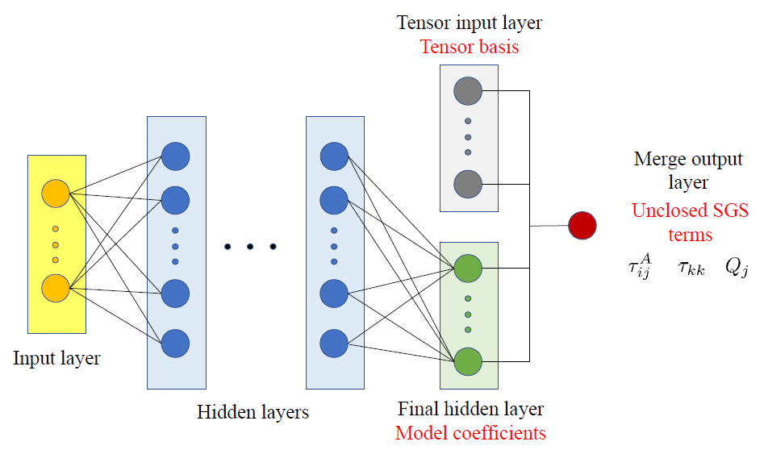

Research Interests
Compressible and incompressible flows, machine-learning-assisted modelling and prediction
Complex compressible wall-bounded flows
- Zero-pressure-gradient turbulent boundary layer
- Self-similar compressible turbulent boundary layer under pressure gradients (Collaborating with Mr. Xiao Liu)
- Chemically reacting compressible turbulent boundary layer (Collaborating with Dr. Jie Sun)
- Compressible turbulent boundary layer over rough surface (Collaborating with Mr. Zizhuo Song and Dr. Bonan Xu)
- Shock-wave/boundary-layer interaction, compression ramp (Collaborating with Ms. Di Fan)
- Compressible real-gas flows at supercritical pressures (Collaborating with Ms. Di Fan)
Helmholtz decomposition
Instability and transition in compressible flows
- Resolvent analysis (Collaborating with Dr. Xiaobai Li and Dr. Bonan Xu)
- Global stability analysis (Collaborating with Dr. Xiaobai Li and Dr. Bonan Xu)
Multiphase incompressible flows
- Incompressible wall-bounded turbulence
- Environmental flows, turbulent convection, and atmospheric boundary layers
- Multiphase flows with phase change, melting and dissolution, ice-ocean interactions
Temperature-driven
T∞ = 20 °CS∞ = 1 g/kg
Competing
T∞ = 20 °CS∞ = 3 g/kg
Salinity-driven
T∞ = 20 °CS∞ = 80 g/kg
Scallop
Machine-learning-assisted modelling and prediction
- Subgrid-scale modelling and wall modelling for large-eddy simulation
- Flow-field reconstruction (Collaborating with Prof. Tianyi Li and Dr. Yuan Jia)
- Data assimilation
Physics-informed subgrid-scale models
